A primer on position guides
Position guides are ticks, labels and lines drawn at the x- and y-axes. Vanilla ggplot2 comes with two position guides: guide_axis(), which draws axes, and guide_none(), which skips drawing anything. The ggh4x package has a few additional axes described further on. A convenient way to specify what guides should be drawn where is the guides() function, that let’s you draw x, x.sec, y and y.sec axes. You can either specify a guide by name omitting the guide_* prefix, e.g. "axis", or by calling the guide constructor, guide_axis(), that allows you to give additional arguments. Unless you specify the position argument to guides yourself, x and x.sec are the bottom and top axes respectively and likewise y and y.sec are the left and right axes.
g <- ggplot(mtcars, aes(wt, mpg)) +
geom_point() +
theme(axis.line = element_line(colour = "black"))
g + guides(
x = guide_none(title = "x"),
x.sec = guide_axis(title = "x.sec"),
y = "none",
y.sec = "axis"
)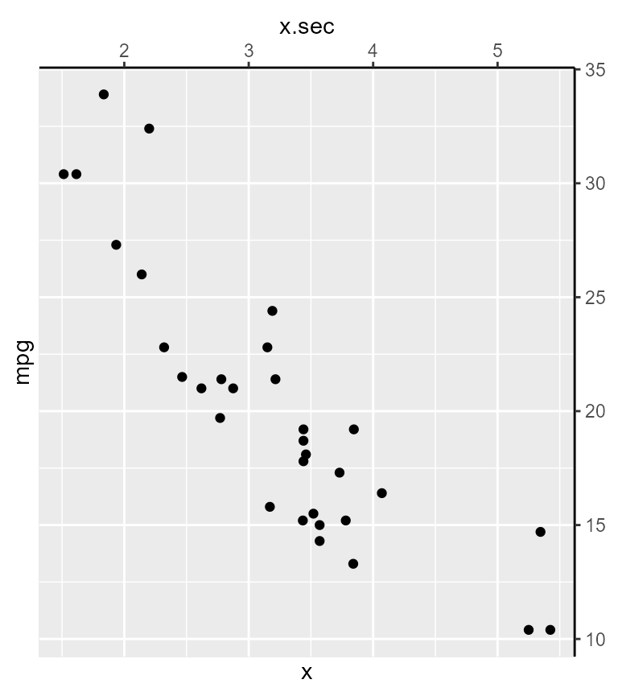
An alternative way to setting the position guides is the use the guide argument in the position scales. Note that both the position scale and the guide have a position argument. The guide’s position overrules the scale’s position, but if the guide’s position is unspecified, it inherits the scale’s position.
g + scale_x_continuous(
position = "bottom",
guide = guide_axis(position = "top")
)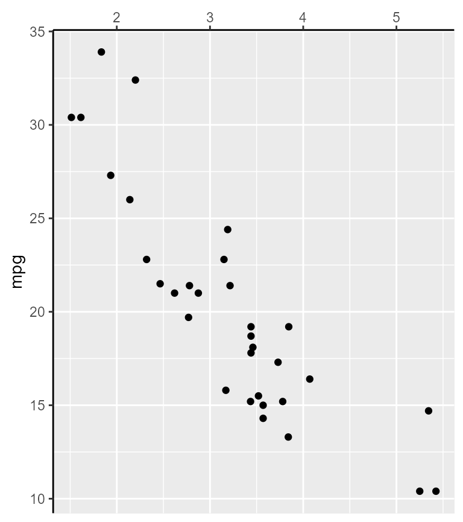
The final place you can specify axes is as an argument to secondary axes in continuous position scales.
g + scale_x_continuous(
sec.axis = dup_axis(breaks = 2:4 + 0.5,
guide = guide_axis(angle = 45))
)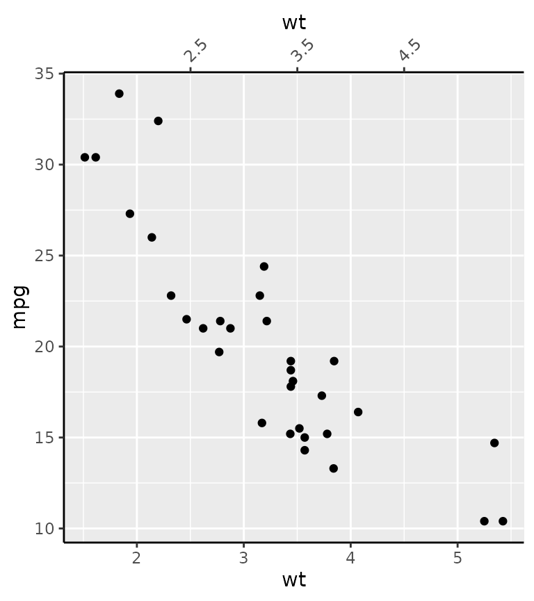
The main takeaways that apply also to ggh4x’s position guides are the following:
- Position guides can be set in the
guides()function or as an argument to the position scales. - One can use the name of the guides (
"axis") to take the defaults, or use a constructor function such asguide_axis()to pass specific arguments.
Coloured axis
This position guide has the convenience argument colour to set the colour of all axis elements at once. This simply circumvents having to set three separate theme elements with the theme() function. The colour argument is available in all of ggh4x’s position guides.
# Setting all theme elements is a mild inconvenience.
g + theme(
axis.line.x = element_line(colour = "forestgreen"),
axis.ticks.x = element_line(colour = "forestgreen"),
axis.text.x = element_text(colour = "forestgreen")
)
# A little bit easier
g + guides(x = guide_axis_colour(colour = "forestgreen"))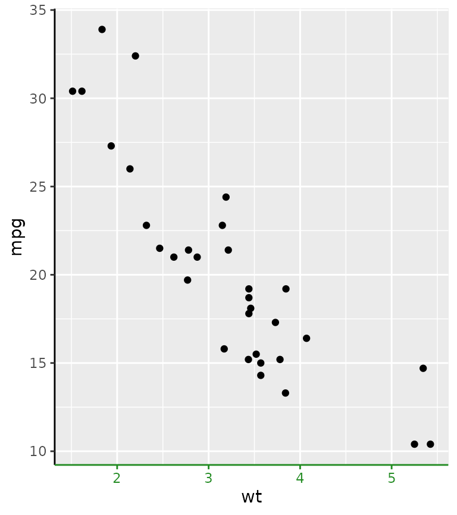
The motivation for this axis is that it used to be a mild inconvenience to set the colour of all these theme elements, if you wanted a colour correspondence between data on a secondary axis.
ggplot(economics, aes(date)) +
geom_line(aes(y = unemploy)) +
geom_line(aes(y = pop / 30), colour = "red") +
scale_y_continuous(
sec.axis = sec_axis(
~ .x * 30, name = "pop",
guide = guide_axis_colour(colour = "red"))
) +
theme(axis.line.y = element_line())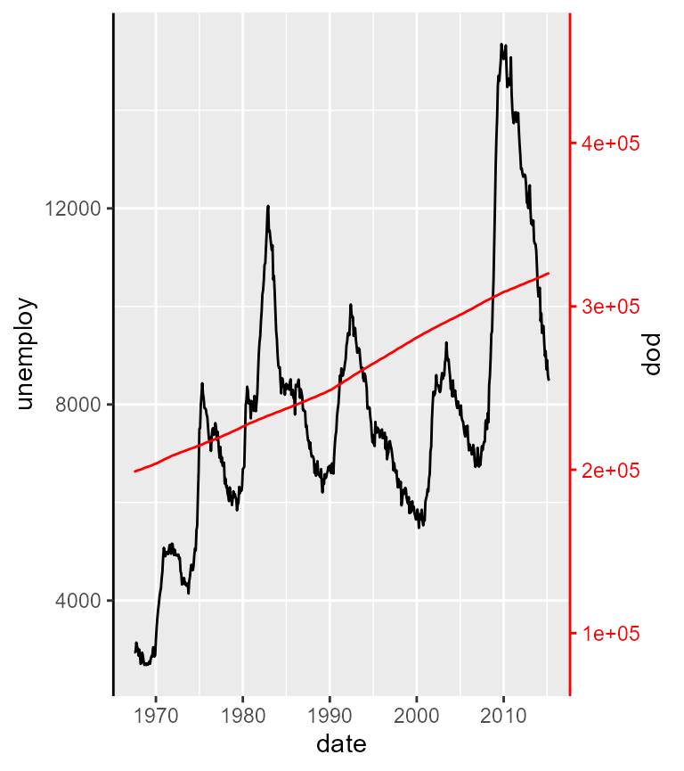
Truncated axes
The truncated axes is not a very special axis: it just makes the axis line shorter. By default, it trims the axis line to the outermost break positions.
g + guides(x = "axis_truncated")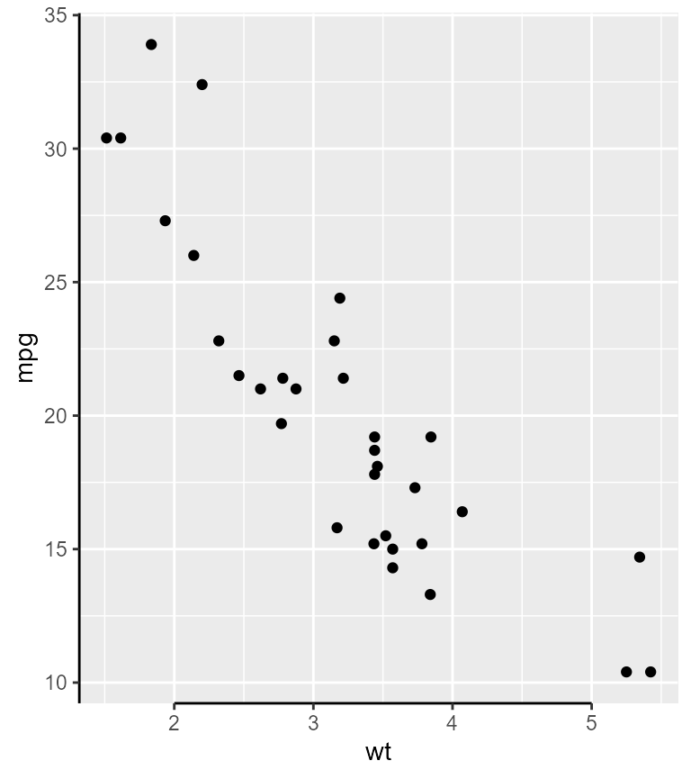
You can control how far the axis line is trimmed by setting the trunc_lower and trunc_upper options in the guide function. These truncation arguments are supported in all other position guides described further on too.
# Using grid units to specify data-independent truncation points.
g + guides(x = guide_axis_truncated(trunc_lower = unit(0.1, "npc"),
trunc_upper = unit(0.9, "npc")))
# Using atomic vectors are interpreted as data points that should be mapped.
g + guides(x = guide_axis_truncated(trunc_lower = 2.5,
trunc_upper = 4.5))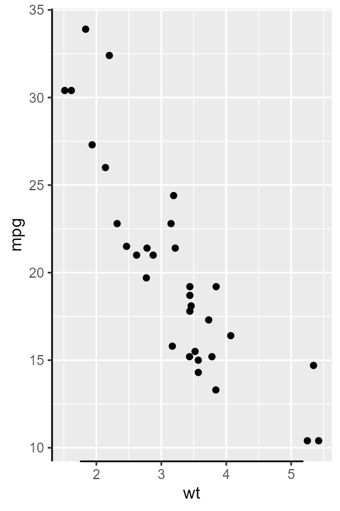
Besides scalar truncation points, the truncation points can also take vectors that give the impression of a discontinuous axis. Alternatively, you can also give functions, or formulas, that take the existing break positions and return truncation points.
g + guides(x = guide_axis_truncated(trunc_lower = c(2, 4),
trunc_upper = c(3, 5)),
y = guide_axis_truncated(trunc_lower = ~ .x - 1,
trunc_upper = ~ .x + 1))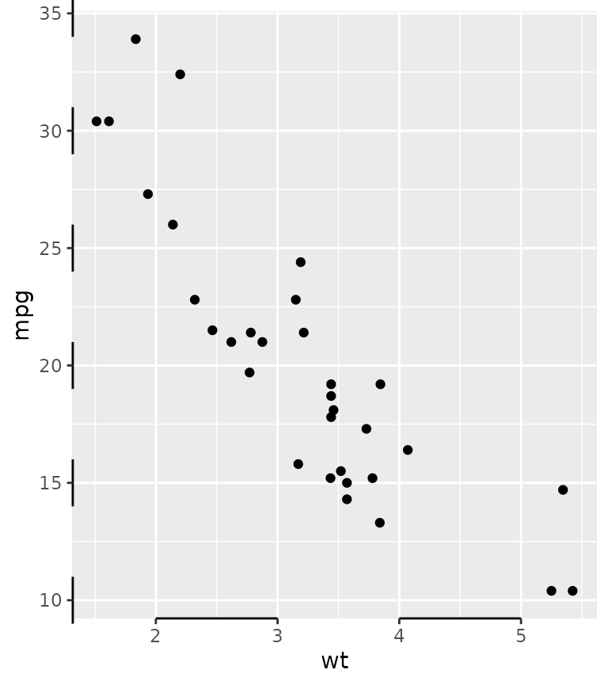
A particular use-case I’ve found in the wilds of the internet, is to label divergent bar charts with separated axes.
df <- data.frame(x = seq(-3, 3, length.out = 6), y = LETTERS[1:6])
ggplot(df, aes(x, y)) +
geom_col() +
scale_x_continuous(
breaks = -3:0, guide = "axis_truncated",
sec.axis = dup_axis(
breaks = 0:3, guide = "axis_truncated"
)
) +
theme(axis.line.x = element_line())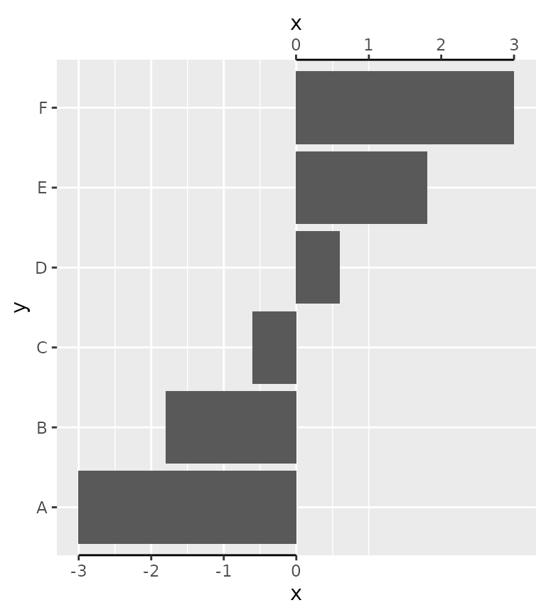
Manual axes
The idea behind manual axes is to allow greater freedom in how breaks and labels are defined. In particular, one can use grid units to set the position of the breaks, as well as atomic data that is mapped to the scale, and set the label attributes as vectors.
g + guides(y.sec = guide_axis_manual(
breaks = unit(c(1, 3), "cm"),
labels = expression("treshold"^2, "annotation"[3]),
label_colour = c("red", "blue"), label_size = c(8, 12)
))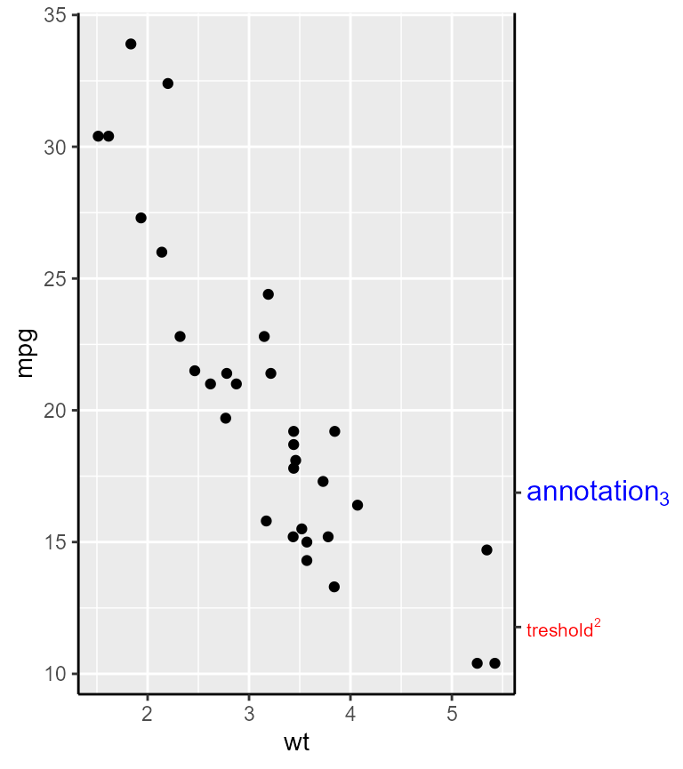
While this all might not seem immediately exiting, consider for a moment that discrete position scales don’t support secondary axes. Manual axis guides extend the capabilities of discrete scales by offering a way to specify secondary axes. One way to use this is to provide additional information about categories.
tab <- table(diamonds$cut)
ggplot(diamonds, aes(cut, price)) +
geom_violin() +
guides(x.sec = guide_axis_manual(
breaks = names(tab),
labels = paste0("n = ", tab)
))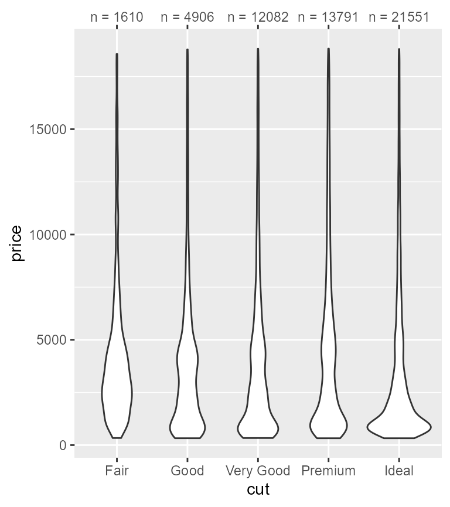
Another use case is to highlight a few select cases of an otherwise crowded axis. More information on the dendrogram axis follows further below.
highlight <- c("New York", "California", "Alabama", "Hawaii")
clust <- hclust(dist(USArrests))
# Melting USArrests
df <- data.frame(
state = rownames(USArrests)[as.vector(row(USArrests))],
crime = colnames(USArrests)[as.vector(col(USArrests))],
value = as.vector(as.matrix(USArrests)),
row.names = NULL
)
ggplot(df, aes(crime, state, fill = value)) +
geom_raster() +
scale_y_dendrogram(hclust = clust, labels = NULL) +
guides(y.sec = guide_axis_manual(breaks = highlight, labels = highlight))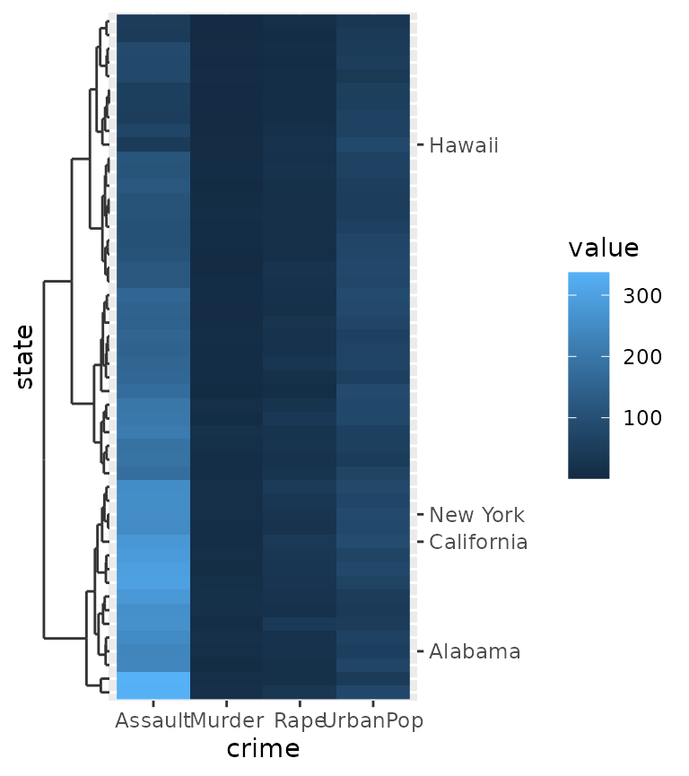
Minor ticks
Perhaps a more useful addition to the axis guide is to also place tick marks at places where the minor breaks are.
g + guides(x = "axis_minor", y = "axis_minor")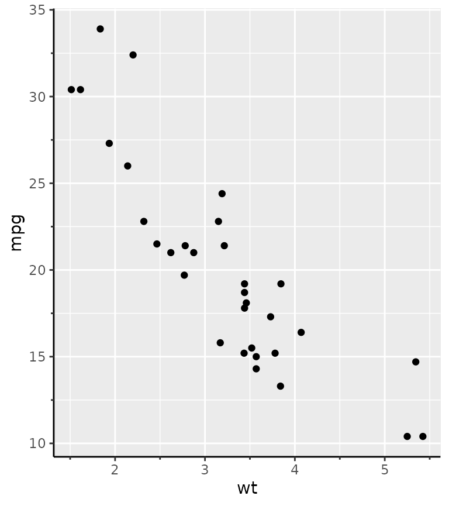
The guide constructor, guide_axis_minor() has no unique arguments, because the positions of the minor breaks are taken directly from the scale. Therefore, you can use the minor_breaks argument of the position scale to determine where the minor ticks are drawn.
g + scale_x_continuous(
minor_breaks = seq(2, 4, by = 0.2),
guide = "axis_minor"
)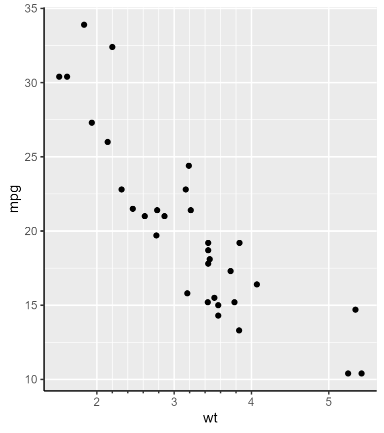
The length of the minor ticks are controlled by the ggh4x.axis.ticks.length.minor theme element, and are specified relative to the major ticks using the rel() function.
g + guides(x = "axis_minor") +
theme(axis.ticks.length.x = unit(0.5, "cm"),
ggh4x.axis.ticks.length.minor = rel(0.5))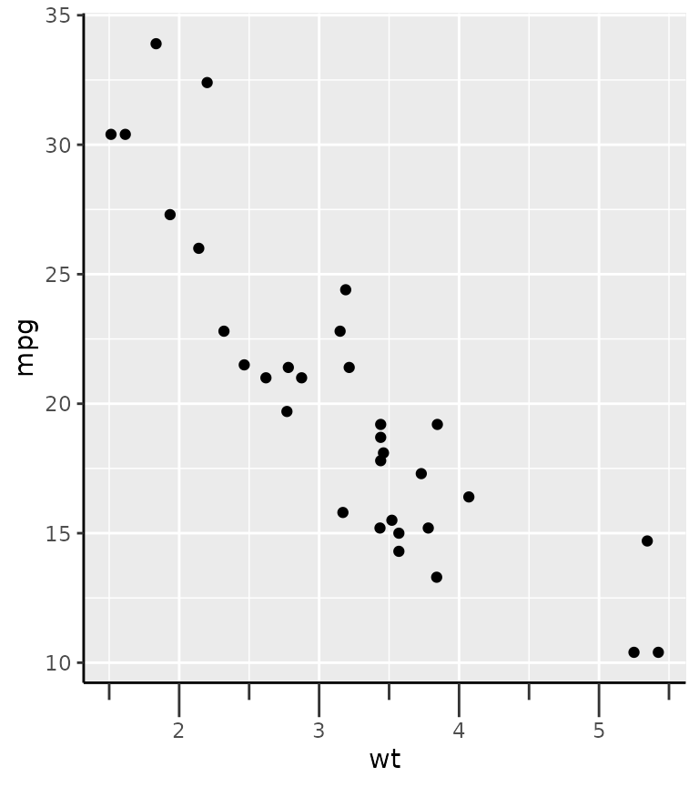
Logarithmic ticks
A variation on the minor ticks is placing ticks for logarithmic axes. A thing to note is that these work best log10 transformations. The ticks now come in three lengths, the major length, the minor length and what is referred to ‘mini’ length. Like with the minor ticks, the mini ticks are also defined relative to the major ticks.
pres <- ggplot(pressure, aes(temperature, pressure)) +
geom_line()
pres + scale_y_log10(guide = "axis_logticks") +
theme(axis.ticks.length.y = unit(0.5, "cm"),
ggh4x.axis.ticks.length.minor = rel(0.5),
ggh4x.axis.ticks.length.mini = rel(0.2))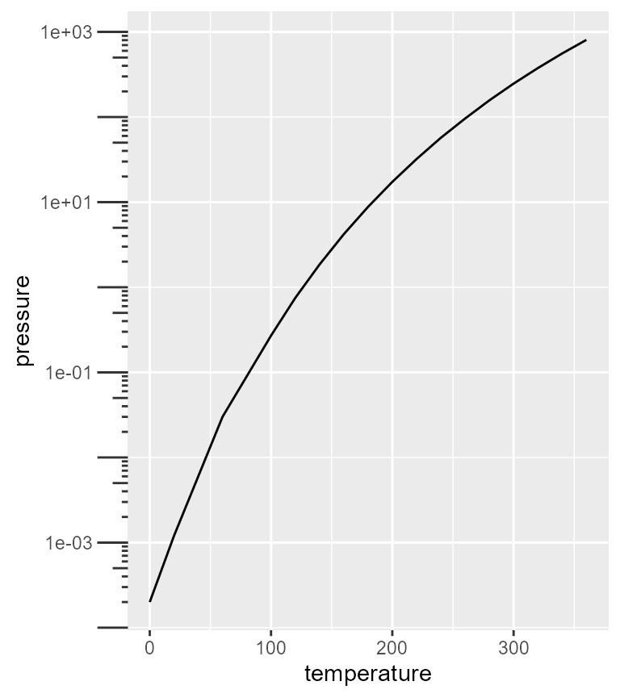
A difference with the annotation_logticks function is that by default, ticks are placed on the outside of the panel and are controlled by the theme. To get good looking log-ticks on the outside, you’d have to set clipping off and dodge the axis text. Whereas using log ticks as a guide takes care of most of the extra steps naturally.
# Using annotation log-ticks
pres + scale_y_log10() +
annotation_logticks(sides = 'l', outside = TRUE) +
coord_cartesian(clip = "off") +
theme(axis.text.y = element_text(margin = margin(r = 10)))
# Using axis_logticks, setting tick length equivalently
pres + scale_y_log10(guide = "axis_logticks") +
theme(axis.ticks.length.y = unit(0.3, "cm"))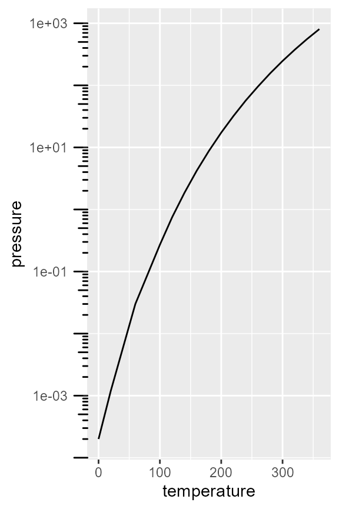
Inversely, you can also place the axis ticks on the inside with negative values for the axis.ticks.length, but you would need to dodge the axis text again.
pres + scale_y_log10(guide = "axis_logticks") +
theme(axis.ticks.length.y = unit(-0.3, "cm"),
axis.text.y = element_text(margin = margin(r = 10)))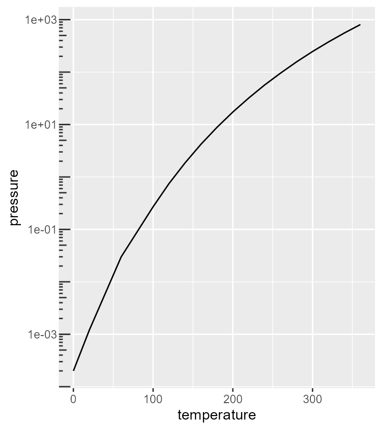
Nested relations
Discrete variables that have some kind of categories or interactions to them can be laid out in a nested fashion. This can be convenient to indicate for example group membership.
In the example below we use the interaction() function to paste together the name of the item and the group it belongs to, with a "." in between. The guide_axis_nested() function tries to split the labels on the "." symbol to tease apart the item and their group membership.
df <- data.frame(
item = c("Coffee", "Tea", "Apple", "Pear", "Car"),
type = c("Drink", "Drink", "Fruit", "Fruit", ""),
amount = c(5, 1, 2, 3, 1),
stringsAsFactors = FALSE
)
ggplot(df, aes(interaction(item, type), amount)) +
geom_col() +
guides(x = "axis_nested")Note above that the ordering of the x-axis is different than the order of the input data. An alternative that can be tried is using the paste0() function to paste together names. In the case below, the names are automatically ordered alphabetically, so the group membership information is disorganised with paste0(). Here, we use the delim argument to split the labels based on a delimiter. The extra tildes (~) are to show where the split happens.
ggplot(df, aes(paste0(item, "~nonsense~", type), amount)) +
geom_col() +
guides(x = guide_axis_nested(delim = "nonsense"))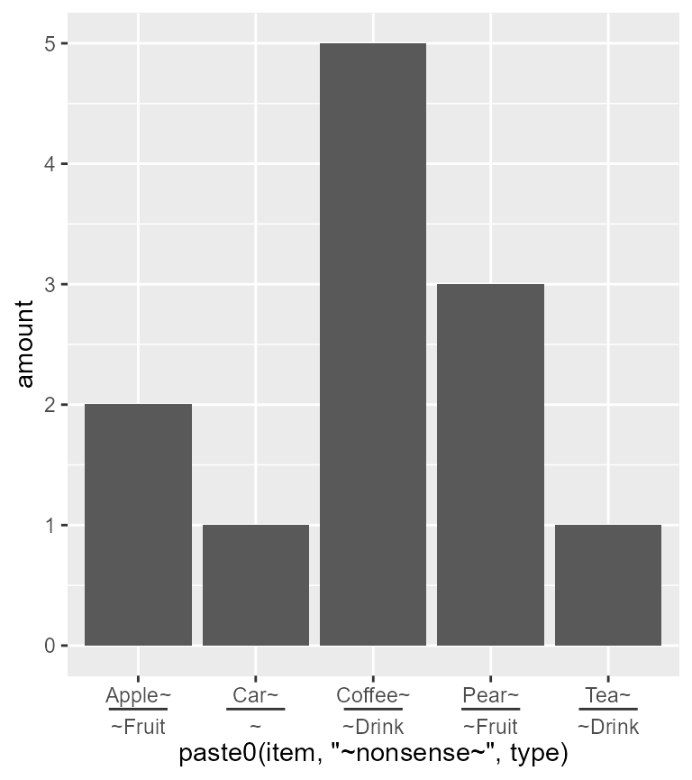
To counter some of the pains with interaction() and paste0() in ordering the items, ggh4x has the weave_factors() convenience function that attempts to preserve the natural order of factor levels in which they occur.
ggplot(df, aes(weave_factors(item, type), amount)) +
geom_col() +
guides(x = "axis_nested")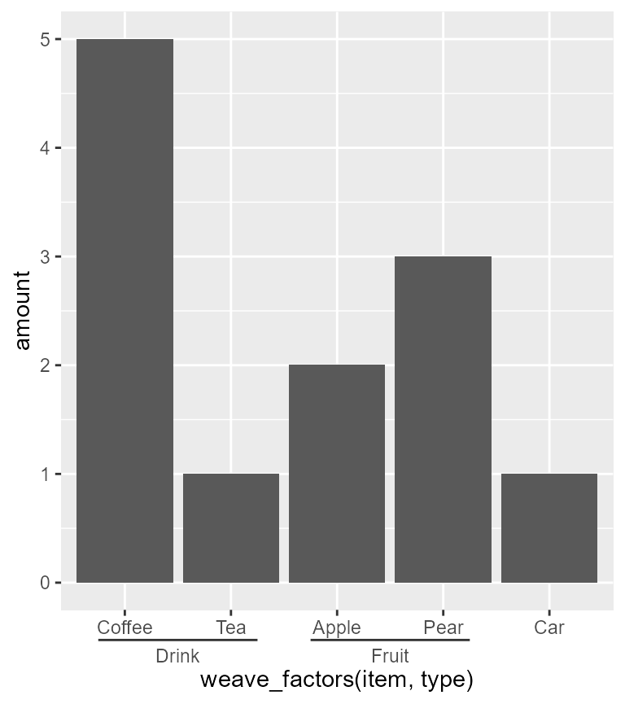
The looks of the indicator line can be controlled by the ggh4x.axis.nestline theme element (also *.x and *.y variants), which by default takes values from the axis ticks. In the example below, the indicator line is red because it takes the colour from the ticks, but is thicker because its own size is set larger. Also the text underneath the indicators can be made different with the ggh4x.axis.nesttext.(x/y) elements.
ggplot(df, aes(weave_factors(item, type), amount)) +
geom_col() +
guides(x = "axis_nested") +
theme(
axis.ticks = element_line(colour = "red"),
ggh4x.axis.nestline.x = element_line(size = 2),
ggh4x.axis.nesttext.x = element_text(colour = "blue")
)Lastly, the guide will also stack multiple group memberships.
df$type2 <- c(rep("Consumables", 4), "Vehicle")
df$appletea <- c("", rep("Ingredient of apple tea", 2), rep(NA, 2))
ggplot(df, aes(weave_factors(item, type, appletea, type2), amount)) +
geom_col() +
guides(x = "axis_nested")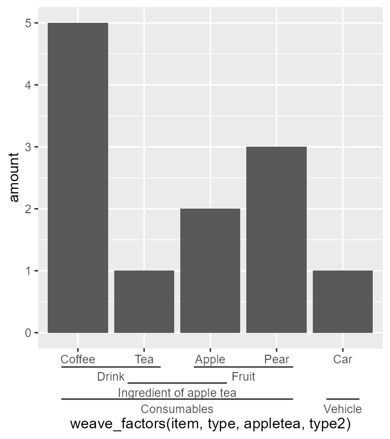
Dendrograms
Another thing people might want to indicate are hierarchical clustering relationships among variables. To accommodate this, there is scale_(x/y)_dendrogram(), which uses the ggdendro package convert a hclust object into a dendrogram. Since any set of scales should only be dependent on their aesthetics and cannot see other aesthetics, the dendrogram scales requires you to provide it with the result of a hierarchical clustering. By using the scale, it reorders the variables for you according to the clustering result, and places a dendrogram over the labels.
clusters <- hclust(dist(USArrests), "ave")
# reshaping USArrests
df <- data.frame(
State = rownames(USArrests)[row(USArrests)],
variable = colnames(USArrests)[col(USArrests)],
value = unname(do.call(c, USArrests))
)
g <- ggplot(df, aes(variable, State, fill = value)) +
geom_raster()
g + scale_y_dendrogram(hclust = clusters)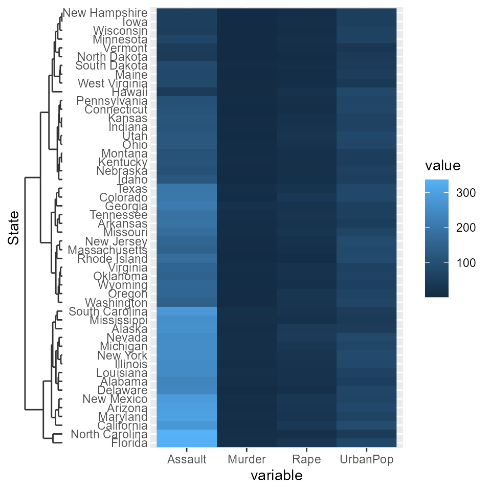
Since the dendrogram replaces the axis ticks, it uses these as theme element from which it takes the looks. The size of the dendrogram is also controlled by the tick length: it is ten times the axis.tick.length element.
g + scale_y_dendrogram(hclust = clusters) +
theme(
axis.ticks.y = element_line(size = 2, lineend = "round"),
axis.ticks.length.y = unit(10, "pt")
)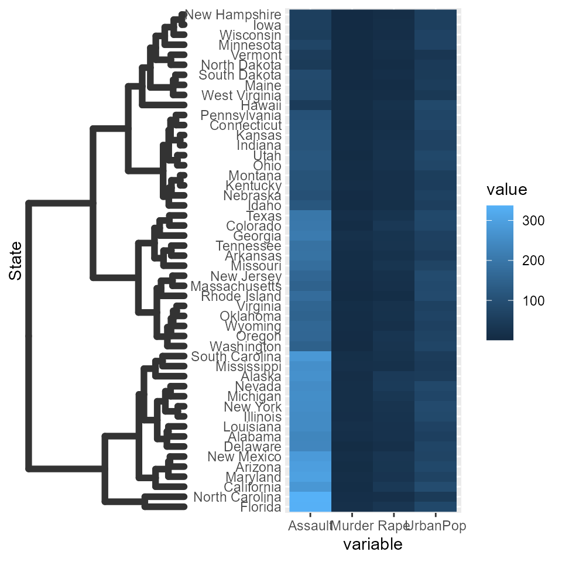
There also is the guide_dendro() function to tune some of the guide behaviour. It is intended to be used within a scale_(x/y)_dendrogram() function.
g + scale_y_dendrogram(guide = guide_dendro(position = "right"),
hclust = clusters)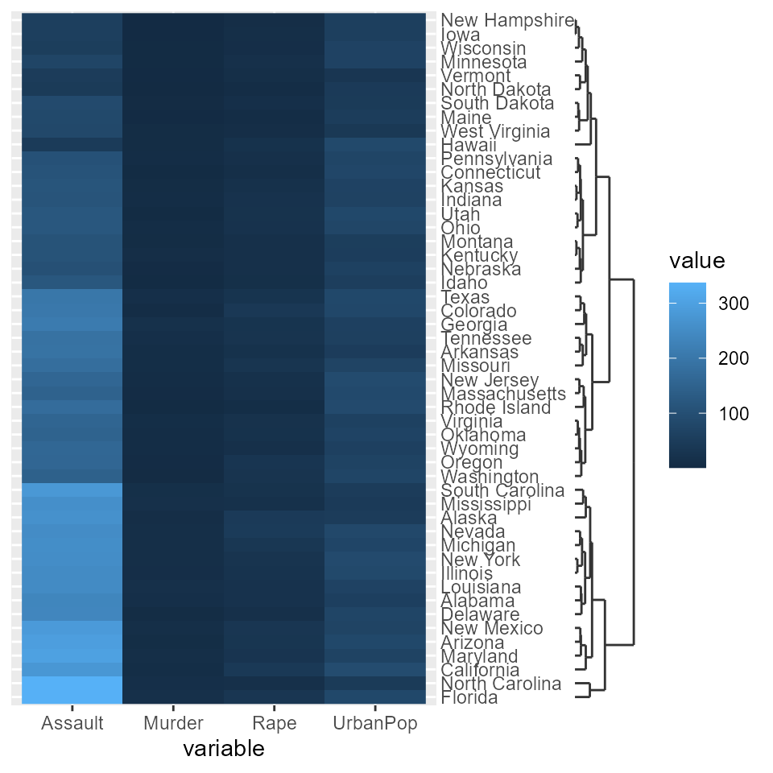
Using guide_dendro() outside dendrogram scales is not recommended, because that would break the relationship between the axis order and the dendrogram that is displayed. To discourage this use, it has been made slightly more inconvenient to use this function outside dendrogram scales: you manually have to supply the digested dendrogram. Notice below that the y-axis order and the dendrogram don’t match and is their implied relationship is thus false.
# Don't do this
ggplot(df, aes(variable, State, fill = value)) +
geom_raster() +
guides(y = guide_dendro(dendro = ggdendro::dendro_data(clusters)))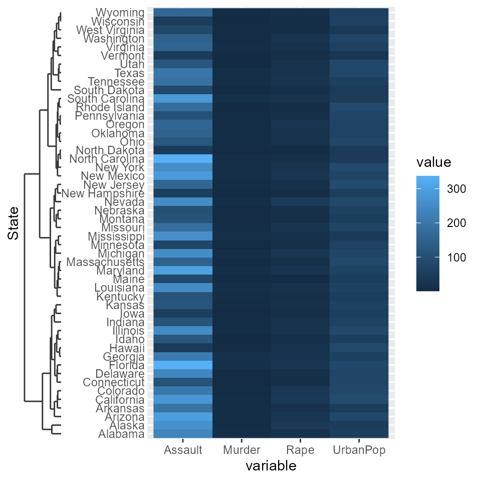